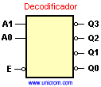
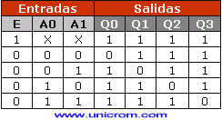

Decodificadores
El decodificador es un dispositivo que acepta una entrada digital codificada en binario y activa una salida. Este dispositivo tiene varias salidas, y se activará aquella que establezca el código aplicado a la entrada.
Con un código de n bits se pueden encontrar 2n posibles combinaciones. Si se tienen 3 bits (3 entradas) serán posibles 23 = 8 combinaciones. Una combinación en particular activará sólo una salida. Por ejemplo: activar la salida Q2 hay que poner en la entrada el equivalente al número 2 en binario (102).
En un decodificador de 2 a 4 (se tienen 2 pines o patitas de entrada y 4 pines o patitas de salida). En la entrada se pone el código en binario (00, 01, 10, 11), que hará que se active sólo una salida de las cuatro posibles. Ver en el diagrama anterior una representación de un decodificador de 2 a 4

Observando con atención el gráfico se puede ver que en la entrada E y en todas las salidas Q, hay una pequeña esfera o bolita. Esta esfera indica que la entrada (en el caso de E) y las salidas, son activas en bajo. Con esto se quiere decir que cuando se pone A0 = 0 y A1 = 0 y estamos escogiendo la salida Q0, ésta tendrá un nivel de voltaje bajo, mientras que todas las otras salidas (Q1, Q2 y Q3) estarán en nivel alto.
De igual manera cuando la entrada E está en nivel bajo (activo en bajo), el decodificador está habilitado. Si está en nivel alto, el decodificador está inhabilitado y ninguna entrada en A0 y A1 tendrá efecto. Ver la tabla de verdad siguiente:

También existen decodificadores de 3 a 8 ( 3 entradas a 8 salidas), de 4 a 16 (4 entradas a 16 salidas), etc.
Ojo:
– X significa que la entrada puede cualquier cosa (es indiferente)
– 1=H=High,0=L=Low.
Ver el siguiente video como un complemento de lo antes mensionado